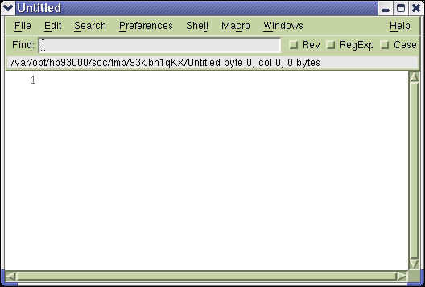
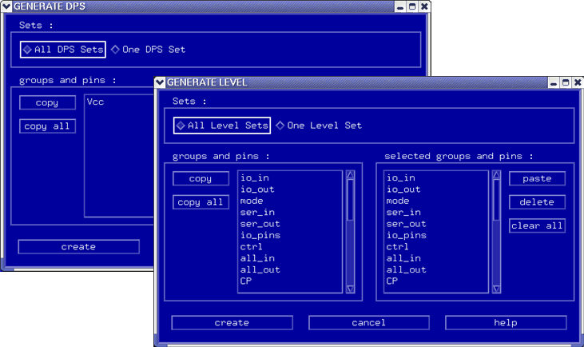
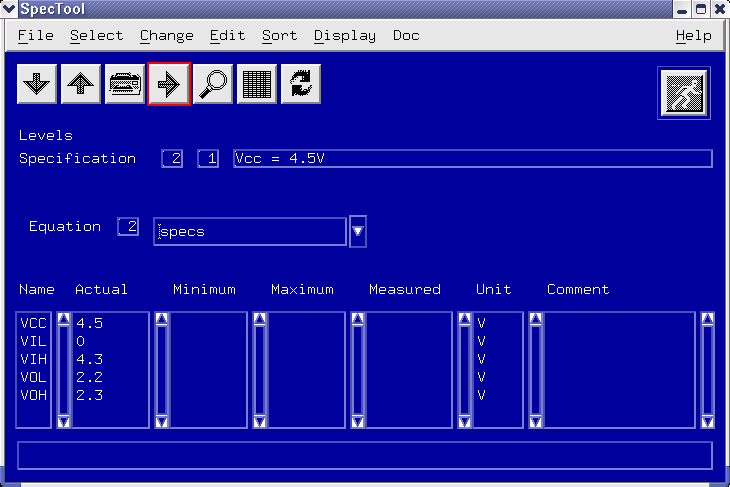

Setting up your levels
About this task
The process for setting up equation based levels is very similar to that for setting up equation based timing.
- Set up the equations for levels.
- Define the specifications.
For detailed information on use cases of level setup, see Level setup related use cases.
Procedure
- Open the Level Setup window.
-
On the menu, click Select > Edit Equations.
The Level Equation Editor opens.

-
On the menu, click, depending on whether you want to generate equations for level or DPS
pins:
- Shell > Generate Level
- Shell > Generate DPS.
Windows similar to those shown in the figure below open.

-
Add the sets and pins you want to include:
- Select All <Level/DPS> sets or On <Level/DPS> set
- Select pins and pin groups and click copy, or click copy all
-
Click create to finish the setup.
The windows closes.
-
If you need to specify both level and DPS sets, repeat steps step 3 to step 5, generating
the other required sets.
For general information on equation based level setup, see How to create an equation set using the Equation editor.
For detailed information, see:
-
Download the values to hardware:
- In the Level Equation Editor, select Shell > Download.
- Press F8.Note Do not use the File > Save option of NEdit. In order to save your work you must first download the changed data, and then save them from the Test Program Explorer.
- Close the Level Equation Editor.
-
Save the level setup in the Test Program Explorer.
Note Remember that, if you want to have your level equation file available at a later stage, you must either save it from within the Level Equation Editor, or save the Level Setup.
-
If you use equation based level setup(s) with spec variables (specs), assign values to
these variables in the Spec Tool.
- Open the Level Setup window.
-
On the menu, click Select > Edit Specification.
The Spec Tool window opens.

-
Edit your specifications as required.
For detailed information, refer to General Editing Features of the Spec Tool.
- To finish your setup, on the menu, click File > Download.
-
Save the Level Setup in the Test Program Explorer.
Note Remember that, if you want to have your level specifications available at a later stage, you must save the Level Setup.
Functional changes
- Introduced before SmarTest 6.3.2